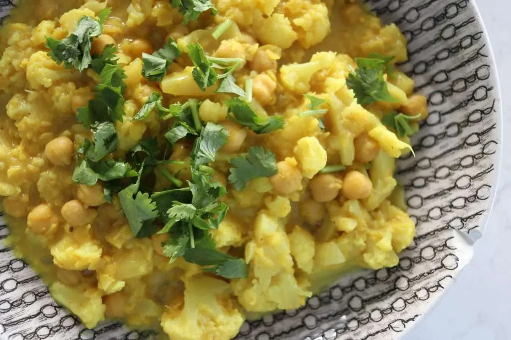

Chickpea & Lentil Curry

Description
A beautiful curry that's both healthy and easy to cook, making it perfect for those looking to add more vegan dishes to their repertoire.
The original recipe can be found on the Cheap Lazy Vegan website.
Ingredients
- Onion (1)
- Garlic (3-5 cloves)
- Head of Broccoli (1/2)
- Coconut Milk (1 can)
- Red Lentils (1 cup)
- Chickpeas (1 can)
- Tumeric (1/2 tsp)
- Cumin (1/2 tsp)
- Curry Powder (1tsp)
Instructions
- Chop and fry the onion and garlic in oil for one minute.
- Add the spices and coat the ingredients.
- Add the broccoli, chickpeas, lentils, and coconut milk, alongside some water (enough to fill the coconut milk can).
- Stir and bring to a boil, before turning down to a simmer and cooking for 25-30 minutes.
- Serve with rice.